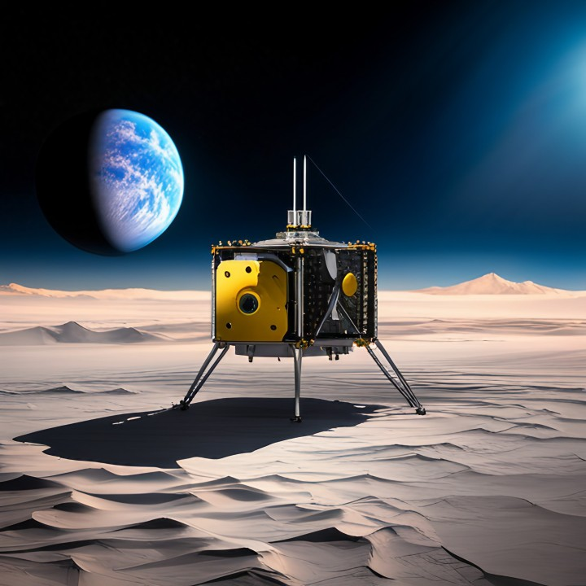
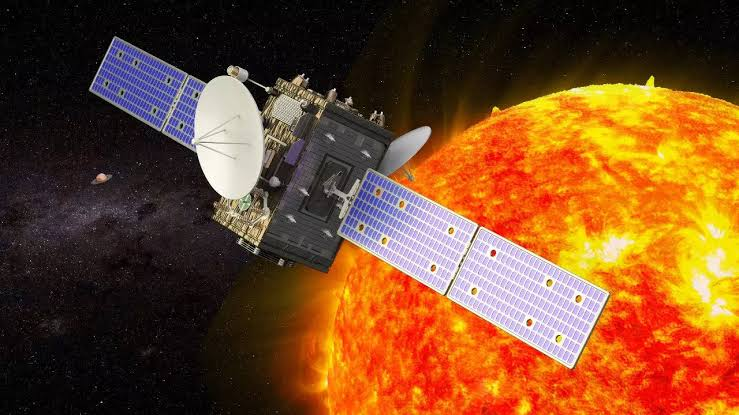
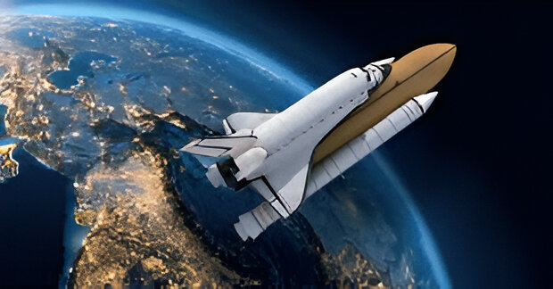
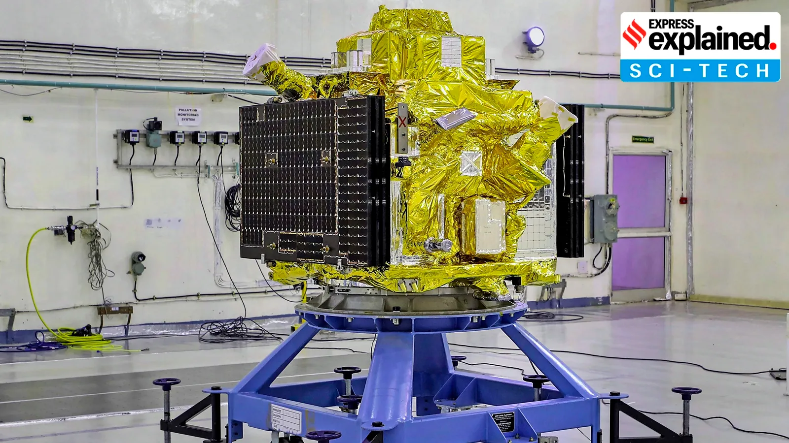

Gallery

Mission Chandrayaan 3
Chandrayaan-3 was launched aboard an LVM3-M4 rocket on 14 July 2023, at 09:05 UTC from Satish Dhawan Space Centre Second Launch Pad in Sriharikota, Andhra Pradesh, India, entering an Earth parking orbit with a perigee of 170 km (106 mi) and an apogee of 36,500 km (22,680 mi).Learn More
The primary objective of Chandrayaan-3 mission was to demonstrate soft
landing near
to lunar south polar region and perform experiments using the instruments on Vikram and
Pragyaan.The
spacecraft was launched on July 14, 2023 on-board LVM3-M4 vehicle from SDSC, SHAR. On August
23rd Vikram
Lander made its historic touch down on Moon and subsequently Pragyan rover was deployed. The
scientific
instruments in Lander and Rover were operated continuously for 1 lunar day as per the
defined mission
life. The mission objectives of Chandrayaan-3 have been completely met. With regard to
Propulsion Module,
the main objective was to ferry the Lander module from GTO to the final lunar polar circular
orbit and
separate the Lander. Subsequent to separation, Spectro-polarimetry of HAbitable Planet Earth
(SHAPE)
payload in the PM was also operated. The initial plan was to operate this payload for about
three months
during the mission life of PM. The precise orbit injection by LVM3 and optimal earth / lunar
burn maneuvers,
resulted in the availability of over 100 kg of fuel in the PM after over one month of
operations in the lunar
orbit. It was decided to use the available fuel in the PM to derive additional information
for future lunar
missions and demonstrate the mission operation strategiesfor a sample return mission

aditya - l1
Aditya-L1 will stay approximately 1.5 million km away from Earth, directed towards the Sun, which is about 1% of the Earth-Sun distance. The Sun is a giant sphere of gas and Aditya-L1 would study the outer atmosphere of the Sun. Aditya-L1 will neither land on the Sun nor approach the Sun any closerLearn More
The strategic placement at the L1 Lagrange point ensures that Aditya-L1 can maintain a
constant, uninterrupted view
of the Sun. This location also allows the satellite to access solar radiation and magnetic
storms before they are
influenced by Earth's magnetic field and atmosphere. Additionally, the L1 point’s
gravitational stability
minimizes the need for frequent orbital maintenance efforts, optimizing the satellite's
operational efficiency.

Mars Orbiter Mission (MOM)
MOM unofficially known as Mangalyaan (Sanskrit: Maṅgala 'Mars', Yāna 'Craft, Vehicle'), was a space probe orbiting Mars since 24 September 2014. It was launched on 5 November 2013 by the Indian Space Research Organisation (ISRO).Learn More
It was India's first interplanetary mission and it made ISRO the fourth
space agency to achieve
Mars orbit, after Roscosmos, NASA, and the European Space Agency. It made India the first
Asian nation to reach
the Martian orbit and the first nation in the world to do so on its maiden attempt. It also
made India the
third nation to orbit another planet after the United States and the Soviet Union.

. PSLV and GSLV Launch Vehicles
ISRO's Polar Satellite Launch Vehicle (PSLV) and Geosynchronous Satellite Launch Vehicle (GSLV) programs have been highly successful.Learn More
PSLV:
Known for its reliability, PSLV has launched numerous satellites into space for both domestic and international clients. In 2017, it set a world record by launching 104 satellites in a single mission.GSLV Mk III:
This heavy-lift launch vehicle is designed to carry larger payloads into space and has been crucial for launching significant missions such as the GSAT series and the upcoming Gaganyaan mission.

Gaganyaan
ISRO is working on Gaganyaan, which aims to send Indian astronauts (Vyomanauts) into space. This ambitious project will mark India's entry into the league of countries capable of human spaceflight and is expected to boost technological advancements and inspire future generations.Learn More
ISRO is working on Gaganyaan, which aims to send Indian astronauts (Vyomanauts) into space.
This ambitious
project will mark India's entry into the league of countries capable of human spaceflight
and is expected
to boost technological advancements and inspire future generations.

X-ray Polarimeter Satellite (XPoSat)
XPoSat is India’s first dedicated polarimetry mission to study various dynamics of bright astronomical X-ray sources in extreme conditions. The spacecraft will carry two scientific payloads in a low earth orbit.Learn More